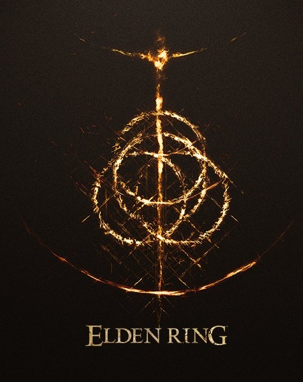
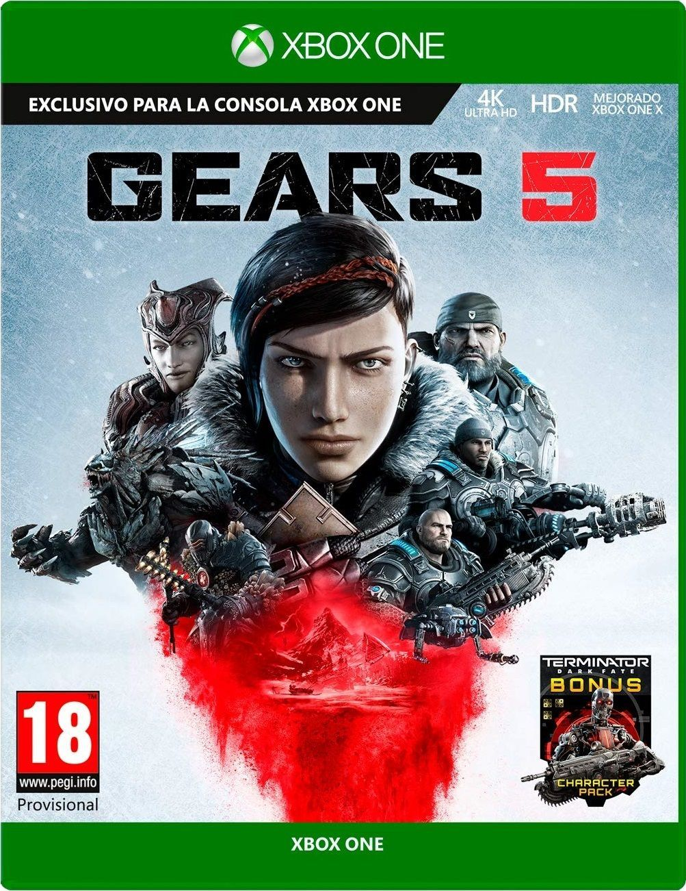
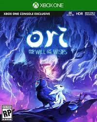

1: Eldeng Ring

Elden Ring es un videojuego de rol de acción desarrollado por FromSoftware y publicado por Bandai Namco Entertainment. El videojuego surge de una colaboración entre
el director y diseñador Hidetaka Miyazaki y el novelista de fantasía George R. R. Martin.
2: Gears 5

Gears 5 es un videojuego de acción en tercera persona desarrollado por The Coalition y publicado por Xbox Game Studios para Microsoft Windows y Xbox One. Es la
sexta entrega de la saga Gears of War y la secuela directa de Gears of War 4. Fue lanzado el 10 de septiembre de 2019.
3: Read Dead Demention 2

Red Dead Redemption 2 es un videojuego de acción-aventura western basado en el drama. Un juego bastante conocido también por sus cantidades de detalles realistas
en un mundo abierto y en perspectiva de primera y tercera persona, con componentes para un jugador y multijugador. Fue desarrollado por Rockstar Games.
4: Ori and the Will of the Wisps

Ori and the Will of the Wisps es un videojuego del género aventura-plataforma y Metroidvania desarrollado por Moon Studios y publicado por Xbox Game Studios
para Microsoft Windows, Xbox One y Nintendo Switch. Es una continuación del título de 2015 Ori and the Blind Forest y fue anunciado durante el E3 2017.
5: The Witcher 3

The Witcher 3: Wild Hunt es un videojuego de rol desarrollado y publicado por la compañía polaca CD Projekt RED. Esta compañía es la desarrolladora mientras que
la distribución corre a cargo de la Warner Bros. Interactive, en el caso de Norteamérica y Bandai Namco para Europa.